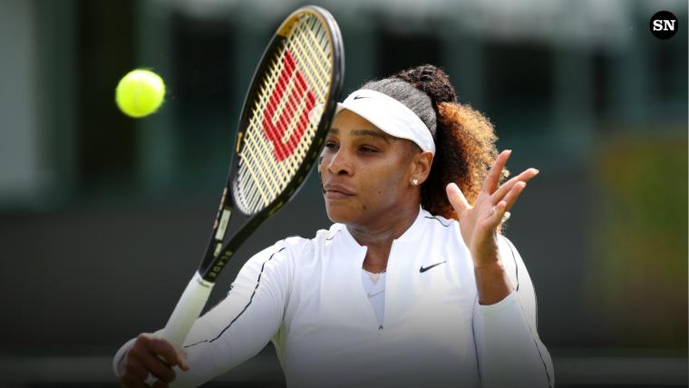
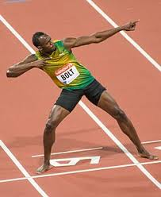
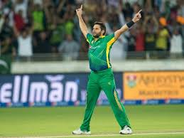

Lionel Messi (Football)
One of the greatest footballers of all time. He has won numerous Ballon d'Or awards and helped Argentina win the FIFA World Cup in 2022.

Serena Williams (Tennis)
A legendary tennis player with 23 Grand Slam singles titles. Known for her power, style, and contribution to women's sports.
Usain Bolt (Athletics)
The fastest man on earth. Bolt holds world records in the 100m and 200m sprints and won 8 Olympic gold medals.
Shahid Afridi (Cricket)
Shahid Afridi is a Pakistani former cricketer and captain of the Pakistan national cricket team. An all-rounder, Afridi was a right-handed leg spinner and a right-handed batsman
